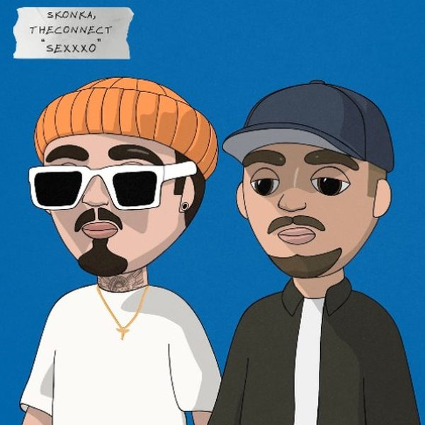
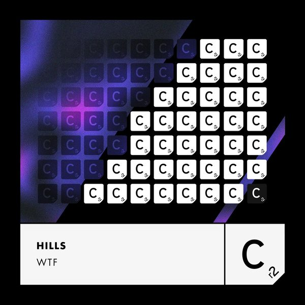

I 18 dischi e le top 6
 1
TIKI TAKAProvenzano & Andrea Gulisano
1
TIKI TAKAProvenzano & Andrea Gulisano

2 Sexxxo TranquiloSkonka, TheConnect 3
La SambaJesús Fernández
3
La SambaJesús Fernández
 4
Black BettyHÄWK
4
Black BettyHÄWK
 5
Latina (RRRÁÁÁ)PWLSE, Bruna Barros
5
Latina (RRRÁÁÁ)PWLSE, Bruna Barros
 6
FreakMarshall Jefferson, Jaded & Miggy Dela Rosa
6
FreakMarshall Jefferson, Jaded & Miggy Dela Rosa
 7
Out Of MindDario Nunez, Lobo Miro
7
Out Of MindDario Nunez, Lobo Miro
 8
PowerBabes on the Run
8
PowerBabes on the Run
 9
Whine UpDJ Kone & Marc Palacios
9
Whine UpDJ Kone & Marc Palacios

10 WTFHILLS (US) 11
Poker FaceAnton By & U-Jeen & Vera Novak
11
Poker FaceAnton By & U-Jeen & Vera Novak
 12
V.I.P.Yves V
12
V.I.P.Yves V
 13
5th SymphonySIKS
13
5th SymphonySIKS
 14
Wait So Long (Isse Maraà Vision Remix)Swedish House Mafia
14
Wait So Long (Isse Maraà Vision Remix)Swedish House Mafia
 15
LegacyLucas & Steve
15
LegacyLucas & Steve
 16
Take Me ThereSick Individuals, Matisse & Sadko, Third Party
16
Take Me ThereSick Individuals, Matisse & Sadko, Third Party
 17
Let Me Show YouCamisra & James Hype
17
Let Me Show YouCamisra & James Hype
 18
MelodiaArgy, PollyAnna, Meduza
18
MelodiaArgy, PollyAnna, Meduza
La tracklist
- 1 TIKI TAKA Provenzano & Andrea Gulisano What Ya Need
- 2 Sexxxo Tranquilo Skonka, TheConnect tranquilo records
- 3 La Samba Jesús Fernández Toolroom Records
- 4 Black Betty HÄWK WEPLAY Music
- 5 Latina (RRRÁÁÁ) PWLSE, Bruna Barros iM Electronica
- 6 Freak Marshall Jefferson, Jaded & Miggy Dela Rosa Helix Records
- 7 Out Of Mind Dario Nunez, Lobo Miro Toolroom Records
- 8 Power Babes on the Run PornoStar Records
- 9 Whine Up DJ Kone & Marc Palacios Motive Records
- 10 WTF HILLS (US) Cr2 Records
- 11 Poker Face Anton By & U-Jeen & Vera Novak Interplay Records
- 12 V.I.P. Yves V CONTROVERSIA
- 13 5th Symphony SIKS Future House Music
- 14 Wait So Long (Isse Maraà Vision Remix) Swedish House Mafia SUPERHUMAN MUSIC
- 15 Legacy Lucas & Steve Spinnin' Records
- 16 Take Me There Sick Individuals, Matisse & Sadko, Third Party 1001 Recordings
- 17 Let Me Show You Camisra & James Hype Armada Music
- 18 Melodia Argy, PollyAnna, Meduza AETERNA Records